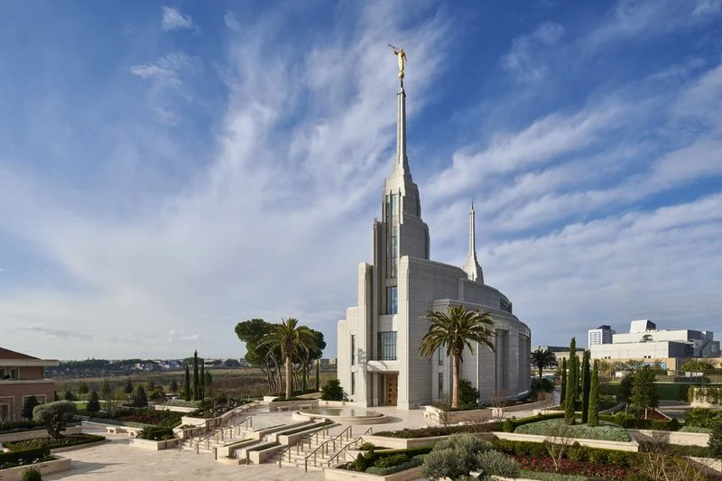
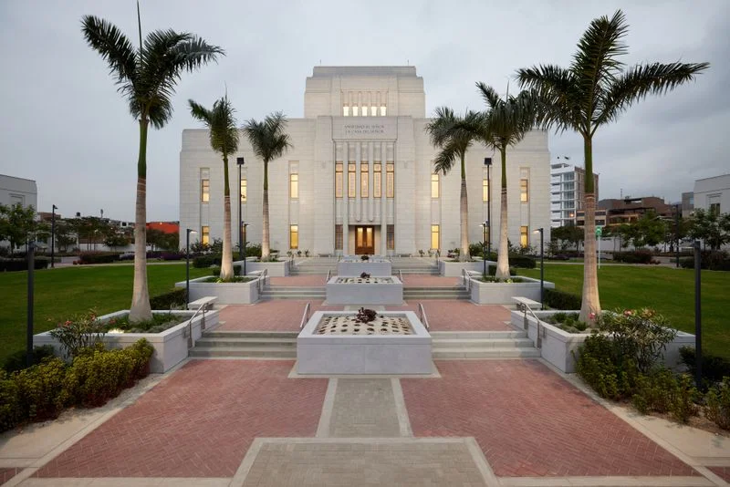
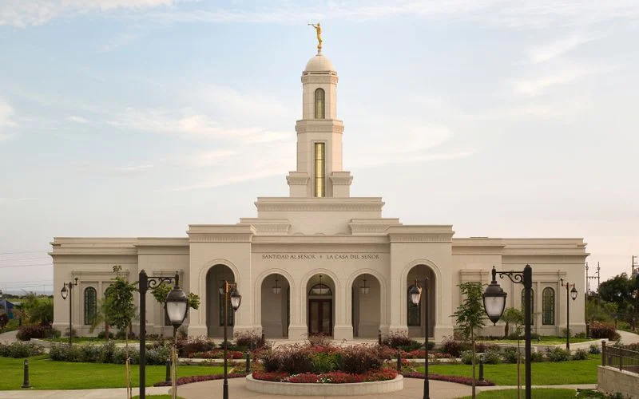
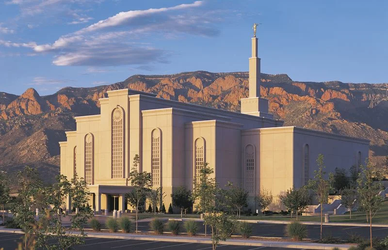
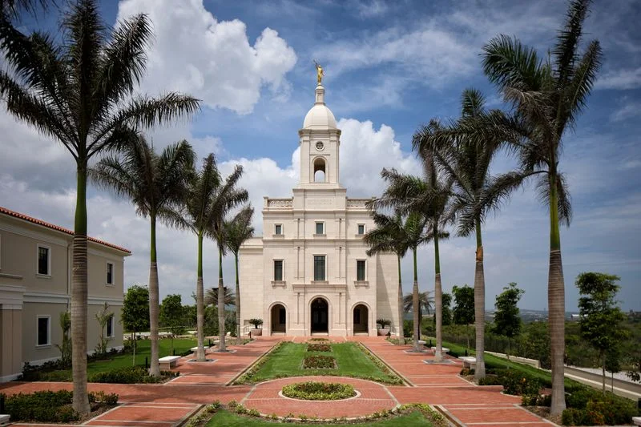

Rome Italy Temple

Lima Peru Los Olivos Temple

Trujillo Peru Temple

Albuquerque New Mexico Temple

Barranquilla Colombia TempleRome Italy TempleLima Peru Los Olivos TempleTrujillo Peru TempleAlbuquerque New Mexico TempleBarranquilla Colombia Temple